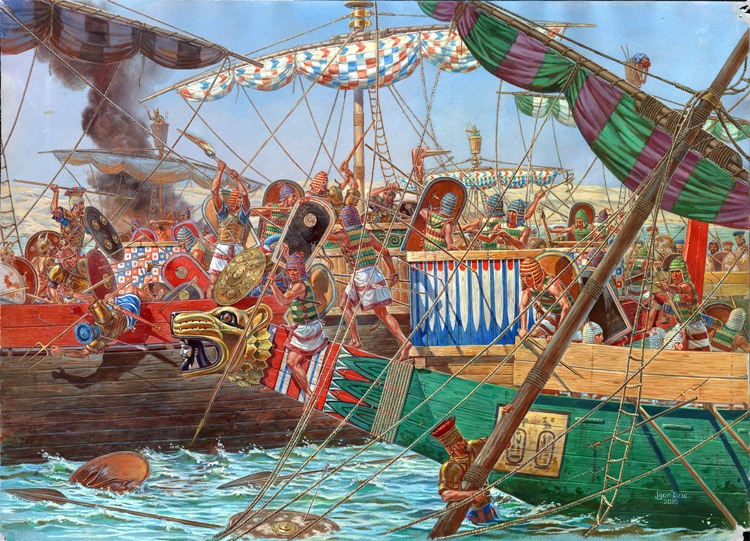
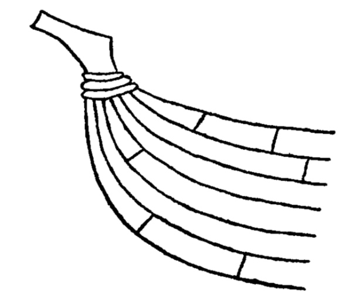
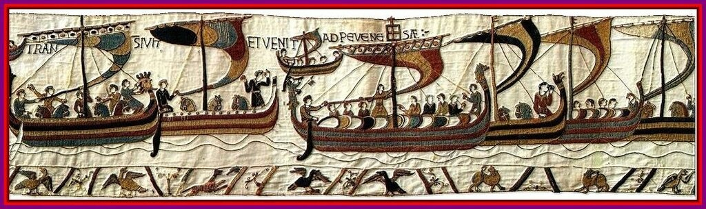
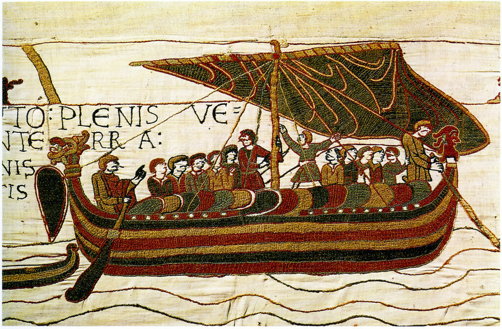
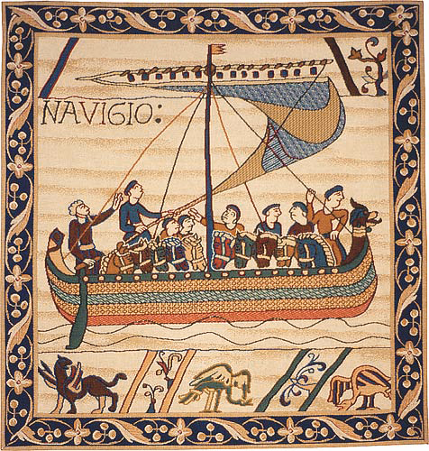
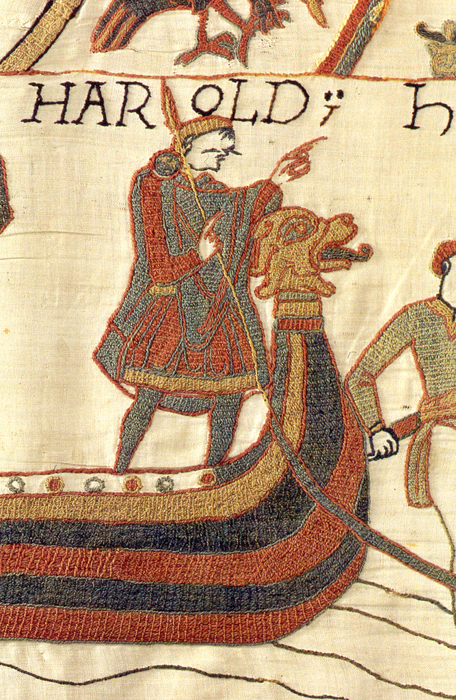
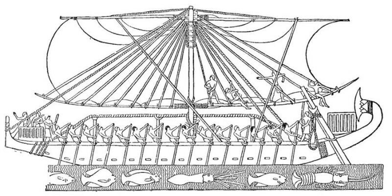

Тросовый обруч
Между тем товарищ Сталин
обручом был – не палачом,
обручом, что к бочке приставлен,
и не кем-нибудь – Ильичем.
Б. Слуцкий. Разговор
Сейчас остановимся на том варианте функционального назначения тросовых шлагов вокруг форштевня, о котором упоминали многие читатели журнала в своих комментариях. Но прежде обратимся к использованной нами ранее картинке из Ancient Warfare Magazine с реконструкцией морского боя между кораблями египтян и «Народов моря» (около 1190 г. до н.э.)

Реконструкция Andrea Salimbeti и Raffaele D'Amato, художник Igor Dzis
Установка боевой платформы сильно увеличила нагрузку на нос и могла вызвать деформацию набора корпуса. В связи с этим и применялись своеобразные тросовые обручи, чтобы воспрепятствовать этой деформации. Видимо, этой же цели служила и тросовая обвязка на форштевне корабля с миниатюры из манускрипта Матвея Парижского, которую мы показывали раньше. Вот ее прорисовка

Конечно, это не достоверный факт, что тросовая обвязка служит именно для повышения прочности корабельного набора. Вот, например, изображения кораблей Вильгельма Завоевателя со знаменитого гобелена Байё




Здесь действительно трудно сказать, изображены ли на гобелене тросовые обручи, или же это орнаментальные украшения , являющиеся элементом композиции носовой фигуры. Традиция изображать такие обвязки на форштевнях и ахтерштевнях кораблей уходит в глубокую древность. Так на изображениях египетских судов из храма Дейр-эль-Бахри (ок. 1250 до н.э.) ясно видны тросовые обвязки, причем пряди троса изображены достаточно четко, и спутать их с декоративным элементом довольно трудно.

Известный историк античного флота С.Торр считает, что эта обвязка – элемент конструкции корпуса: продольный трос – hypozomata – проходит вдоль всего корпуса на специальных опорах и закрепляется несколькими шлагами на форштевне и ахтерштевне, как ясно видно на египетском изображении. Цель этого троса – предотвратить перегиб корпуса судна, который не имеет палубы. Но из рисунка совсем не следует, что продольный канат и обвязка штевней исполнены одним и тем же тросом.
Нам не удалось с уверенностью доказать, какой цели действительно служили тросовые шлаги вокруг верхней части форштевня. Мы продолжим раскопки, чтобы привести новые аргументы в пользу той или иной версии. Пока же перевес на стороне последней гипотезы: эти тросовые обручи были частью конструкции корпуса и служили для поддержание его прочности.
Не закрываем пока эту тему, и, думаю, нам еще несколько раз придется возвращаться к ней.